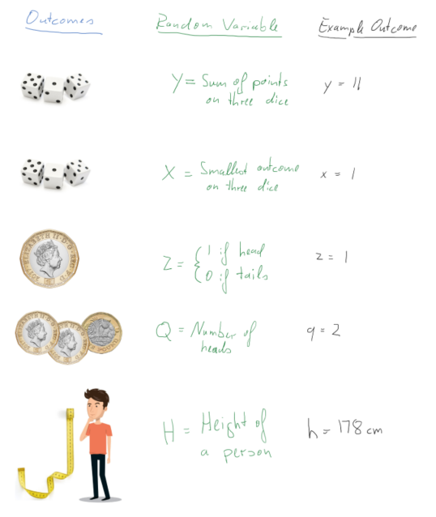
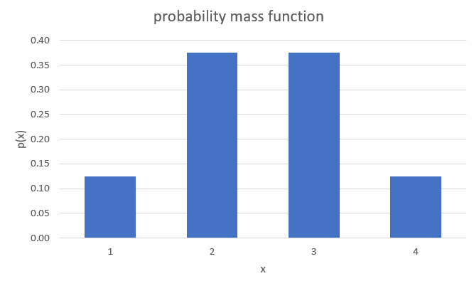

9 Discrete Random Variables and Probability Distributions
9.1 Introduction
This is a brief video introduction to discrete random variables (YouTube, 4min)
Previously we have learned how to calculate with probabilities in order to make sensible statements concerning uncertain events, such as the probability of rolling a fair dice and getting three “6” in a row. This has assumed that we already know the probabilities with which certain events occur, here that the probability of rolling a “6” in any particular roll of the dice is \(1/6\). Then we learned how to calculate probabilities for related events (unions, intersections and complements). The question we shall begin to address in the this section (discrete random variables) and the next (continuous random variables) is how we might construct models which assign probabilities in the first instance.
When we build models we will usually deal with numbers which describe outcomes even if the original outcomes (of a random process) may not immediately be a number. A random variable assigns a number to the outcome of an experiment. These outcomes depend on the random outcome of a experiment. In the following picture you can see five examples of such random variables (labelled by upper case letters) and a particular example outcome (labelled by lower case letters).

We will soon see a more formal definition of what a random variable is, but if you keep these examples in the back of your mind that formal definition will make more sense.
The outcome of the original experiment (rolling dice, flipping coins, choosing a person) is assumed to be random, which implies that the experiment can take different outcomes. This is where the “random” in “random variable” comes from. Understanding what the set of experiment outcomes, and therefore outcomes of the random variable can be is the first step in understanding random variables and their characteristics. In particular, understanding the possible outcomes will allow us to differentiate between discrete random variables (such as the coin flip examples, or indeed the dice examples, where you have a finite number of outcomes) and continuous random variables (such as the height of the person, assuming that you can measure the height to arbitrary precision).
The second element in fully characterising a random variable is to understand with which probabilities certain outcomes can occur. This is done by the probability distributions of a random variable. To fix ideas, and before we will become more formal, let’s actually state one such probability distribution, the probability distribution for the random variable \(Z\):
\[\begin{equation*} p(z)= \begin{cases} p(Z=0) = 0.5\\ p(Z=1) = 0.5 \end{cases} \end{equation*}\]
Recall that \(Z=0\) represents the experimental outcome of “tails” and \(Z=1\) of “heads”. So what this means is that the probability of both a heads and a tail is 50% as it should be for a fair coin. In other words, the probability distribution tells us how likely the different experimental outcomes are.
In this section we will talk about random variables and probability distributions in general and a set of discrete random variables and their distributions in particular.
9.2 Random Variable
Hopefully you have already understood that a random variable assigns numerical values to experimental outcomes. For our purposes, we can think of a random variable as having two components:
- a label/description which defines the variable of interest
- the definition of a procedure which assigns numerical values to events on the appropriate sample space.
Note that:
- often, but not always, how the numerical values are assigned will be implicitly defined by the chosen label
- A random variable is neither RANDOM nor a VARIABLE! Rather, it is device which describes how to assign numbers to physical events of interest or formally “a random variable is a real valued function defined on a sample space”.
- A random variable is indicated by an upper case letter (\(X\), \(Y\), \(Z\), \(T\), etc). The strict mathematical implication is that since \(X\) is a function, when it is applied on a sample space (of physical attributes) it yields a number
Just in case you didn’t realise yet, the above is somewhat abstract. Don’t forget that this, for the example of random variable \(Z\), merely implies that there is a function which maps “heads” to the value 1 and “tails” to the value 0. You may remember that functions are mappings which map from one space (the sample space) to the real line. Different experimental outcomes can have the same value for the random variable (for example, both a TTHT and a HTTT coin toss sequence both have an outcome of 1 as they both have one heads outcome).
9.2.1 Examples of random variables
Let us list a few more examples of random variables
- Let \(X=\) “the number of HEADs obtained when a fair coin is flipped 3 times”. This definition of \(X\) implies a function on the physical sample space which generates particular numerical values. Thus \(X\) is a random variable and the values it can assume are:
\[\begin{eqnarray*} X(H,H,H)&=&3;~X(T,H,H)=2;~(H,T,H)=2;~X(H,H,T)=2;\\ X(H,T,T)&=&1;~X(T,H,T)=1;~X(T,T,H)=1;~X(T,T,T)=0. \end{eqnarray*}\]
This is an example (as mentioned above) where two different outcomes in the sample space (e.g. \({T,H,H}\) and \({H,T,H}\)) are mapped into the same number, here 2. * Let the random variable \(Y\) indicate whether or not a household has suffered some sort of property crime in the last 12 months, with \(Y(yes)=1\) and \(Y(no)=0\). Note that we could have chosen the numerical values of 1 or 2 for “yes” and “no” respectively. However, the mathematical treatment is simplified if we adopt the binary responses of 1 and 0. * Let the random variable \(T\) describe the length of time, measured in weeks, that an unemployed job-seeker waits before securing permanent employment. So here, for example,
\[\begin{equation*} T(15~\textit{weeks unemployed})=15, \quad T(31~\textit{weeks unemployed}$)=31,~etc. \end{equation*}\]
Once an experiment is carried out, and the random variable (\(X\)) is applied to the outcome, a number is observed, or realised; i.e., the value of the function at that point in the sample space. This is called a realisation, or possible outcome, of \(X\) and is denoted by a lower case letter, \(x\).
In the above examples, the possible realisations of the random variable \(X\) (i.e., possible values of the function defined by \(X\)) are \(x=0,1,2\) or \(3\). For \(Y\), the possible realisations are \(y=0,1\); and for \(T\) they are \(t=1,2,3,...\).
The examples of \(X\), \(Y\) and \(T\) given here all are applications of discrete random variables (the outcomes, or values of the function, are all integers). Technically speaking, the functions \(X\), \(Y\) and \(T\) are not continuous.
9.2.2 Additional Resources
Khan Academy:
- A short introduction to the nature of random variables
9.3 Discrete random variables
In general, a discrete random variable can only assume discrete realisations which are easily listed prior to experimentation. Having defined a discrete random variable, probabilities are assigned by means of a probability distribution. A probability distribution is essentially a function which maps from \(x\) (the real line) to the interval \(\left[ 0,1\right]\); thereby generating probabilities.
Probability distributions come in two forms (each carrying the same information), the probability mass function (pmf) and the cumulative distribution function (cdf). When we talk about probability distributions for continuous random variable we will also have two representations of the same information, but instead of a pmf we will then talk about a probability density function (pdf).
9.3.0.1 Additional Resources
Khan Academy:
- Differentiate between discrete and continuous random variables. The difference can indeed be subtle!
9.3.1 Probability mass function (pmf)
The probability mass function (pmf) is defined for a DISCRETE random variable, \(X\), only and is the function:
\[\begin{equation*} p(x)=Pr(X=x),\quad \text{for all }x. \end{equation*}\]
Note that:
- We use \(p(x)\) here to emphasize that probabilities are being generated for the outcome \(x\); e.g., \(p(1)=Pr(X=1)\).
- Note that \(p(r)=0\), if the number \(r\) is NOT a possible realisation of \(X\). Thus, for the property crime random variable \(Y\), with \(p(y)=Pr(Y=y)\), it must be that \(p(0.5)=0\) since a realisation of \(0.5\) is impossible for the random variable.
- If \(p(x)\) is to be useful, then it follows from the axioms of probability that,
\[\begin{equation*} p(x)\geq 0\quad and\quad \sum_{x}p(x)=1 \end{equation*}\]
where the sum is taken over all possible values that \(X\) can assume. * It follows from the previous point that \(0 \leq p(x) \leq 1\).
The last two points are only correct for discrete random variables and will have to be modified for continuous random variables.
For example, when \(X=\) “the number of HEADs obtained when a fair coin is flipped \(3\) times”, we can write that \(\sum_{j=0}^{3}p(j)=p(0)+p(1)+p(2)+p(3)=1\) since the number of heads possible is either \(0,1,2,\) or \(3\). Be clear about the notation that is being used here. \(p(j)\) is the probability that \(j\) heads are obtained in \(3\) flips; i.e., \(p(j)=Pr\left( X=j\right)\) , for values of \(j\) equal to \(0,1,2,3\). This type of random variable is what will soon be introduced as a Bernoulli random variable. But to complete the example here, we can already discuss the pmf here.
The only way in which we can get \(0\) HEADs is if the coin flips to TAIL all three times. The probability of this is \(p(0)=0.5^3=1/8\). Don’t worry if that is not super obvious, it will soon be explained. The only way in which we can get three HEADSs if it flips to HEAD three times in a row, the probability of which is \(p(3) = 0.5^3=1/8\). We are left with the case of 1 or two HEADS. The probability for both of these is \(p(1)=p(2)=3\cdot0.5^3 = 3/8\). This delivers the following pmf:
\[\begin{equation*} p(x)= \begin{cases} p(0)=p(X=0) = 1/8\\ p(1)=p(X=1) = 3/8\\ p(2)=p(X=2) = 3/8\\ p(3)=p(X=3) = 1/8 \end{cases} \end{equation*}\]
Please confirm that this pmf meets all the four conditions above. For discrete probability distributions the interpretation of these is straightforward. \(p(2)=3/8\) indicates that there is a 37.5% probability that three fair coin flips end up with two HEADs. When we move to continuous random variables we loose this straightforward interpretation.
The pmf tells us how probabilities are distributed across all possible outcomes of a discrete random variable \(X\); it therefore generates a probability distribution. A probability distribution tells you how the probabilities distribute across all possible outcomes. We will encounter many examples of this soon.
We will often encounter graphical representations of the pmf. The above example can be graphically represented in a way which very much resembles a histogram, but note that these are not empirical frequencies, but the probabilities coming from a known probability distribution of a random variable.

You can see in that image that there are four distinct values of \(X\) for which there is a positive probability mass. You being able to see the distinct possible outcomes is a feature of a discrete random variable. Especially when the random variable has many possible outcomes a graphical representation of the pmf is very useful.
9.3.2 Cumulative distribution function (cdf)
In the DISCRETE case the cumulative distribution function (cdf) is a function which cumulates (adds up) values of \(p(x)\), the pmf. In general, it is defined as the function:
\[\begin{equation*} P(x)=P (X\leq x); \end{equation*}\]
e.g., \(P(1)=P(X\leq 1)\). Note the use of an upper case letter, \(P\left(.\right)\), for the cdf, as opposed to the lower case letter, \(p\left( .\right)\), for the pmf. In the context of cdfs it is conventional to use \(P\) and nor \(Pr\) and therefore we shall from now on use \(P\).
Suppose the discrete random variable, \(X\), can take on possible values \(x=a_{1},a_{2},a_{3},...,\) etc, where the \(a_{j}\) are an increasing sequence of numbers \(\left( a_{1}<a_{2}<\ldots \right)\). Then, for example, we can construct the following (cumulative) probability:
\[\begin{equation*} P \left( X\leq a_{4}\right) =P(a_{4})=p(a_{1})+p(a_{2})+p(a_{3})+p(a_{4})=\sum_{j=1}^{4}p(a_{j}), \end{equation*}\]
i.e., we take all the probabilities assigned to possible values of \(X\), up to the value under consideration (in this case \(a_{4}\) ), and then add them up. It follows from the axioms of probability that, if we sum over all possible outcomes, that \(\sum_{j}p(a_{j})=1\), all the probabilities assigned must sum to unity, as noted before. Therefore,
\[\begin{eqnarray*} P \left( X\geq a_{4}\right) &=&p\left( a_{4}\right) +p\left( a_{5}\right)+p\left( a_{6}\right) +\ldots \\ &=&\left\{ \sum_{j}p(a_{j})\right\} -\left\{ p\left( a_{1}\right) +p\left(a_{2}\right) +p\left( a_{3}\right) \right\} \\ &=&1-P \left( X\leq a_{3}\right) , \end{eqnarray*}\]
and, similarly,
\[\begin{equation*} P \left( X>a_{4}\right) =1-P \left( X\leq a_{4}\right) \end{equation*}\]
which is always useful to remember.
9.3.2.1 Example
Let us return to the example pmf we used before:
\[\begin{equation*} p(x)= \begin{cases} p(0)=p(X=0) = 1/8\\ p(1)=p(X=1) = 3/8\\ p(2)=p(X=2) = 3/8\\ p(3)=p(X=3) = 1/8 \end{cases} \end{equation*}\]
What is the cdf of \(X\)? (to 4 d.p.)
\[\begin{equation*} P(x)= \begin{cases} P(0)=P(X\leq0) = 1/8=0.125\\ P(1)=P(X\leq1) = 4/8=0.5\\ P(2)=P(X\leq2) = 7/8=0.875\\ P(3)=P(X\leq3) = 8/8=1 \end{cases} \end{equation*}\]
For instance \(P(1)=P(X\leq1)=p(0)+p(1)=1/8+3/8=4/8=0.5\).
What is \(P(X\geq2)\)? \(P(X\geq2)= 1 - P(1)=1-0.5=0.5\)
Here we use the earlier relationship that \(P(X\geq2)= 1- P(X < 2)= 1 - P(1)=1-0.5=0.5\).
Cumulative distribution functions (cdf) are also often represented graphically. The video below walks you through the process of producing a graphical representation of a cdf for a discrete random variable (YouTube, 6:55min).
9.4 Example Distributions
There is an infinite amount of possible discrete probability distributions. As it turns out a large number of interesting experiments resulting in discrete random variables turn out to follow a small number of types of distributions. We therefore introduce the most important ones of these here.
All of these distributions depend on parameters (in this case either one or two) and the distributional characteristics, as described by their expected values and variances, depend on these parameters. In the following discussion we will make that link obvious.
9.4.1 A Bernoulli random variable
Let us start by describing a number of examples of random variables which can be described as a Bernoulli random variable.
- Whether or not a household has suffered some sort of property crime in the last 12 months, with \(Y(yes)=1\) and \(Y(no)=0\)
- Whether or not a person thinks that Brexit has improved their daily life, with \(Y(yes)=1\) and \(Y(no)=0\)
- Whether you pass the Advanced Statistics exam, with \(Y(yes)=1\) and \(Y(no)=0\)
- Whether a person is Covid vaccinated, with \(Y(yes)=1\) and \(Y(no)=0\)
A Bernoulli random variable is a particularly simple (but very useful) discrete random variable. All the above are examples of Bernoulli random variables. A Bernoulli random variable can only assume one of two possible values: \(y=0\) or \(y=1\); with probabilities $( 1-) $ and \(\pi\), respectively. Often, the value \(1\) might be referred to as a success and the value \(0\) a failure. Here, \(\pi\) is any number satisfying \(0\leq\pi \leq1\), since it is a probability, and it is called a parameter for this random variable. All distributions we will be talking about have at least one parameter. If you know the type of a distribution and the values for its parameters then you know everything there is to know about that random variable. For instance, as of Sept 2022 around 93% of the UK population aged 12 or over has been covid vaccinated at least once (Source: UK Government). This implies that here \(\pi=0.93\).
The value of this parameter will differ for every random variable.
Clearly, different choices for \(\pi\) generate different probabilities for the outcomes of interest; it is an example of a very simple statistical model and the (pmf) can be written compactly as:
\[\begin{equation*} p(y)=\pi ^{y}\left( 1-\pi \right) ^{1-y},\quad 0\leq \pi \leq 1,\quad y=0,1. \end{equation*}\]
For the vaccination example this implies (recall \(Y=1\) indicating a vaccinated person and \(\pi = 0.93\)):
\[\begin{equation*} p(x)= \begin{cases} p(0)= 0.93 ^{0}\left( 1-0.93 \right) ^{1-0} = 0.07\\ p(1)= 0.93 ^{1}\left( 1-0.93 \right) ^{1-1} = 0.93 \end{cases} \end{equation*}\]
For a variable with two discrete outcomes only, as this one, the cdf is not very interesting. But we shall, in any case, state it
\[\begin{equation*} P(y)= \begin{cases} P(0)= P(y \leq 0)= (1-\pi)\\ P(1)= P(y \leq 1)= 1\\ \end{cases} \end{equation*}\]
or in the vaccination example
\[\begin{equation*} P(x)= \begin{cases} P(0)= P(y \leq 0)= 0.07\\ P(1)= P(y \leq 1)= 1\\ \end{cases} \end{equation*}\]
9.4.1.1 Distributional properties
This is really the simplest of discrete distributions, one with only two possible outcomes, 0 and 1. In some sense you know everything about this distribution if you know the probability of success \(\pi\). Keeping in mind other distributions (with many more possible outcomes) we will make it a habit to describe distributions by their moments. In particular we will look at a distributions first (expected value/mean) and the second moment (variance). The third moment is the skewness. If you can find out why moments of the distribution are called moments, please let me know.
We calculate the expected value of a discrete random variable as follows (summing over all possible outcomes - here two)
\[\begin{eqnarray*} E[Y] &=& \sum_{y=0}^1 y~p(y)\\ &=& 0 \cdot p(0) + 1 \cdot p(1) = 0 \cdot (1-\pi) + 1 \cdot \pi = \pi \end{eqnarray*}\]
So the expected value is \(\pi\). On average we would expect an outcome of \(\pi\), the probability of success. Of course, unless \(\pi\) is equal to 0 or 1 there is no possible outcome of \(\pi\).
The variance of this discrete random variable is calculated as follows:
\[\begin{eqnarray*} Var[Y] = E[Y^2] - E[Y]^2 &=& \sum_{y=0}^1 y^2~p(y) - E[Y]^2\\ &=& (0^2 \cdot p(0) + 1^2 \cdot p(1)) - \pi^2= (0 \cdot (1-\pi) + 1 \cdot \pi) - \pi^2\\ &=& \pi - \pi^2 = \pi(1-\pi) \end{eqnarray*}\]
9.4.2 The Binomial random variable
Now we introduce a different, but related, random variable, a binomial random variable. The example you you will find in most textbooks is the following. Define the random variable \(X\) as the number of HEADS when you toss a fair coin three times (or any number of times, there is nothing special about the number three). As we already discussed earlier, the possible outcomes for this random variable are 0, 1, 2 or 3. Note that any individual coin toss is a Bernoulli random variable with \(\pi = 0.5\) (if the coin is a fair coin).
Let’s list a few more examples of binomial random variables:
- The number of households (out of 1000 randomly selected) who have suffered some sort of property crime in the last 12 months.
- The number of respondents who think that Brexit has improved their daily life, out of 1010 randomly selected people.
- The number of students out of 900 who pass the Advanced Statistics exam.
- The number of people (out of 300 randomly selected) who are Covid vaccinated, with \(Y(yes)=1\) and \(Y(no)=0\)
You can see that these all relate to repeated Bernoulli random variables (see the examples of Bernoulli random variables we used earlier).
Let us return to the coin toss example (\(X=\) the number of HEADs obtained from three flips of a fair coin) for which we actually stated the probability distribution earlier. Now we discuss how these probabilities were calculated. The four possible values of \(X\) are 0, 1, 2 or 3. Furthermore, assuming independence between the coin tosses, we can write that
- \(p(0)=P (X=0)=P (T,T,T)=P \left( \text{T}\right) \times P\left( \text{T}\right) \times P \left( \text{T}\right) =(1/2)^{3}=1/8\)
- \(p(1)=P (X=1)=P (H,T,T)+P (T,H,T)+P (T,T,H)\)
\(=(1/2)^{3}+(1/2)^{3}+(1/2)^{3}=1/8+1/8+1/8=3/8\) - \(p(2)=P (X=2)=P (H,H,T)+P (H,T,H)+P (T,H,H)\)
\(=(1/2)^{3}+(1/2)^{3}+(1/2)^{3}=1/8+1/8+1/8=3/8\) - \(p(3)=P (X=3)=P (H,H,H)=(1/2)^{3}=1/8\)
With this information we can also state the cdf:
\[\begin{equation*} P(x)= \begin{cases} P(0)= p(0)= 1/8 = 0.125\\ P(1)= p(0) + p(1)= 1/8 + 3/8 = 0.5\\ P(2)= p(0) + p(1) + p(2)= 1/8 + 3/8 + 3/8 = 7/8 = 0.875\\ P(3)= p(0) + p(1) + p(2) + p(3) = 1 \end{cases} \end{equation*}\]
This video goes through the above workings (YouTube, 14min).
9.4.2.1 Example
What is \(P(X<2)\)? \(P(X<2)=\)
\(P(X<2)=p(0) + p(1) = 0.5\)
What is \(P(X>0)\)?
\(P(X>0) =\)
\(P(X>0)=1-P(X\leq 0) = 1- 0.125 = 0.875\)
What is \(P(X>2)\)?
\(P(X>2) =\)
\(P(X>2)=1-P(X\leq 2) = 1- 0.875 = 0.125\)
What is \(P(2.5)\)?
\(P(2.5) =\)
\(P(2.5)=P(X \leq 2.5)=P(X\leq 2) = 0.125\)
In fact, this is a very simple example of a Binomial distribution. In general, a binomial random variable is based on several repetitions of independent but identical Bernoulli experiments, an experiment which can result in only one of two possible outcomes “succes” with a probability denoted by $$ (\(0<\pi <1\)) and “failure” with probability denoted by $1-$). Therefore a binomial random variable is based on several independent Bernoulli random variables with parameter \(\pi\).
A good example is opinion polls, when respondents are asked simple “yes” or “no” questions, say “Has Brexit improved your daily life?” (For now we abstract from the possibility of a “Don’t know” answer option). Individuals answer “yes” $( 1) $ or “no” \(\left( 0\right)\). A random variable, \(X\), is then said to have a binomial distribution (and is called a Binomial random variable) if it is defined to be the total number of successes in \(n\) independent and identical Bernoulli experiments; e.g. of the 1010 people randomly selected to answer whether Brexit improved their daily life.
Note that the possible realisations of \(X\) are \(x=0,1,2,...,n\), where \(n\) is the number of Bernoulli experiments (\(n=\) 1010 in the above opinion poll example). If you know \(n\) and \(\pi\) then you can derive the binomial probability mass function (pmf) as follows:
\[\begin{equation*} p(x)=Pr(X=x)=\binom{n}{x}\pi ^{x}(1-\pi )^{n-x},\quad x=0,1,2,...,n;\quad 0<\pi <1. \end{equation*}\]
where
\[\begin{equation*} \binom{n}{x}=\frac{n!}{x!(n-x)!}, \end{equation*}\]
and \(n!\) denotes \(n\) factorial: \(n!=n(n-1)(n-2)...2\times 1\); e.g., \(3!=6\). In the above formula, we define \(0!=1\). Note that \(\binom{n}{x}\) is called a combinatorial coefficient and always gives an integer; it simply counts the total number of different ways that we can arrange exactly \(x\) “ones” and \(\left( n-x\right)\) “zeros” together.
Let’s go back to a previously calculated example, the probability of having two HEADS when we toss a fair coin three times.
9.4.2.2 Example
For the tossing a fair coin three times example and receiving a HEADS being defined as success, what are \(pi\) and \(n\)?
$= $
$n = $
If you defined TAILS as success, what would \(pi\) be?
$= $
It is possible to define either of the two outcomes as success. Usually this would change the probability of success, \(\pi\), but as \(P(HEADS)=P(TAILS)=0.5\) it doesn’t change on this occasion.
For example, consider when we calculated \(p(2)\) in the coin toss example.
\[\begin{eqnarray*} p(2)&=&Pr(X=2)=P(H,H,T)+P(H,T,H)+P(T,H,H)\\ &=&(1/2)^{3}+(1/2)^{3}+(1/2)^{3}=1/8+1/8+1/8=3/8 \end{eqnarray*}\]
We basically identified that there were three ways in which we could get two HEADS (H): \((H,H,T), (H,T,H)\) and \((T,H,H)\). Each of these outcomes had a probability of \(1/8\) and as there were three ways we calculated \(3 \cdot (1/8) = 3/8\).
How would that look when we apply the pmf formula? Let’s start with the combinatorial coefficient.
\[\begin{eqnarray*} \binom{n}{x}&=&\frac{n!}{x!(n-x)!}\\ \binom{3}{2}&=&\frac{3!}{2!(3-1)!}= \frac{3 \cdot 2 \cdot 1}{(2 \cdot 1)\cdot(1)}=\frac{6}{2}=3 \end{eqnarray*}\]
So this result, 3, tell us that there are 3 ways in which we can get two HEADS (\(x=2\)) when tossing a coin three (\(n=3\)) times. It was easy to figure out with without that formula when \(n=3\) and \(x=2\), but the formula will be very useful when dealing with much larger \(n\) and \(x\).
So now we know where the 3 came from in our calculation of the probability \(p(2)\). Let’s complete the calculation by applying the above formula:
\[\begin{equation*} p(2)=P(X=2)=\binom{3}{2}0.5^{2}(1-0.5 )^{3-2}=3 \cdot 0.5^{2} \cdot 0.5^1 = 3 \cdot \frac{1}{8}= \frac{3}{8} \end{equation*}\]
There were three ways in which we could get two heads, and each of the three ways had a probability of \(1/8\), which resulted in an overall probability of \(p(2)=3/8\).
Consider, then, a Binomial random variable, with parameters \(n=5\) and \(\pi=0.3\). The possible outcomes for the random variable \(X\) are 0, 1, …, 5 and we could calculate the probability for each of these outcomes according to the above formula. Let’s do that for one outcome, let’s calculate \(p(2) = p(X=2)\):
\[\begin{eqnarray*} p(2) &=&p(X=2)=\binom{5}{2}\left( 0.3\right) ^{2}\left( 0.7\right) ^{3} \\ &=&\frac{5!}{2!3!}\left( 0.09\right) \left( 0.343\right) \\ &=&\frac{5\cdot 4}{2}\left( 0.09\right) \left( 0.343\right) \\ &=&0.3087. \end{eqnarray*}\]
This video explains how to apply the binomial probability formula (YouTube, 10min).
We can now also think of the cumulative distribution function, i.e. probabilities of the type \(P(2) = P(X \leq 2)\) (note that we are using a capital \(P\) for the cdf while we used a \(p\) for the pmf):
\[\begin{eqnarray*} P\left( 2\right) &=&P\left( X\leq 2\right) =p\left(X=0\right) +p\left( X=1\right) +P\left(X=2\right) \\ &=&p\left( 0\right) +p\left( 1\right) +p\left( 2\right) \\ &=&\binom{5}{0}\left( 0.3\right) ^{0}\left( 0.7\right) ^{5}+\binom{5}{1}% \left( 0.3\right) ^{1}\left( 0.7\right) ^{4}+\binom{5}{2}\left( 0.3\right) ^{2}\left( 0.7\right) ^{3} \\ &=&0.16807+0.36015+0.3087 \\ &=&0.83692. \end{eqnarray*}\]
9.4.2.3 Example
Assume that \(\pi = 0.4\), \(n=10\) and \(x=1\).
What is \(P(1)=\)?
Just use a straight application of the binomial formula.
\begin{eqnarray*}
P\left( 1\right) &=&P \left( X\leq 1\right) =p\left(0\right) +p\left(1\right)\\
&=&\binom{10}{0}\left( 0.4\right) ^{0}\left( 0.6\right) ^{10}+\binom{10}{1} \left( 0.4\right)^{1}\left( 0.6\right) ^{9}\\
&=&0.006046618+0.04031078 \\
&=&0.04635732.
\end{eqnarray*}What is \(P(9)=\)?
\(P(9)=\) (to 4dp)
\begin{eqnarray*}
P\left( 9\right) &=&1-P\left( X >9\right) =1-p\left(10\right) \\
&=&1-\binom{10}{10}\left( 0.4\right) ^{10}\left( 0.6\right) ^{0}\\
&=&1-0.0001048576 \\
&=&0.9998951.
\end{eqnarray*}You could apply the binomial formula straight, but calculating \(p(0)+p(1)+...p(9)\) is very burdensome. It is much easier when you recognise that the only outcome not captured by \(x \leq 9\) is \(X=10\) and hence you can calculate \(1 - p(10)\).
9.4.2.4 Distributional properties
The binomial distribution has parameters \(n\) and \(\pi\). The mean and variance of the binomial distribution are determined by these two parameters as follows:
\[\begin{eqnarray*} E[X]&=&n \pi\\ Var[X] &=& n \pi(1-\pi) \end{eqnarray*}\]
Compare these parameters to those of a Bernoulli random variable. You should see that these are related. This isn’t surprising as a binomial random variable really is the result of \(n\) applications of independent and identical Bernoulli experiments.
9.4.2.5 Example
Which combination of parameters delivers a distribution with a larger variance?
- Distribution 1: \(n=20,\pi=0.7\)
- Distribution 2: \(n=30,\pi=0.8\)
\(Var[X_1] = 20 \cdot 0.7 \cdot 0.3 = 4.2\) and \(Var[X_2] = 30 \cdot 0.8 \cdot 0.2 = 4.8\)
9.4.2.6 Additional resources
Khan Academy:
This is a set of clips to explain binomial random variables. Here is the link to the first clip.
9.4.3 Geometric Random Variable
We now introduce geometric random variables and these will also be linked to Bernoulli random variables, just as binomial random variables were. Consider the following real life situation. You are a journalist and saw the results of the Ipsos Mori survey on whether people think that Brexit has been a good decision for the UKimproved daily life. Your editor (a staunch Brexit supporter) has demanded that for the evening news programme you have to interview a Brexit supporter. You know that, if you sample a random person, there is only a 32% probability that that person thinks that Brexit has improved life. How many people will you have to ask to find a Brexit supporter? The random variable here is \(X=\) the number of people you need to ask to find a Brexit supporter. The possible outcomes are \(x=1,2,3,...\).
This random variable is linked to the underlying Bernoulli experiment which describes whether an individual person is a Brexit supporter (success with probability \(\pi=0.32\)) or not (failure with probability \(1-\pi=0.68\)).
In this case \(X\) is a Geometric random variable. Actually, for this to be the case, we have to make the same assumption as for the binomial random variable. The Bernoulli experiments have to be identically and independently distributed. What does that mean. That means that every time you ask someone, the probability that the person is a Brexit supporter should be 32%. This probability cannot change. Assume you stand in Market Street and you see two young women walking down the street, You ask the first person whether she is a Brexit supporter. She says “No”. As people tend to hang out with like minded people, that has made it more likely that the friend she came along with equally does not support Brexit. This means that most likely the probability for success, if you were to ask her friend as well, would be even lower than 32%. If you wanted to make sure that your “experiment” follows a geometric distribution you should not ask her friend and find and unrelated person as your potential next interview partner.
Other examples of a geometric random variable are:
- The number of Space Rocket starts until one fails (here one would define a failed start as a “success”).
- The number of multiple choice questions you would have to answer until you get one right if you are only guessing?
- How many people you meet in the bus until you meet one person not vaccinated against Covid?
- How many arrows you have to throw on a darts board until you hit the bulls eye?
The probability mass function of a geometrically distributed random variable is
\[\begin{equation*} p\left( x\right) =p\left( X=x\right) =\pi \left( 1-\pi \right)^{x-1},\quad x=1,2,3,...;\quad 0<\pi <1, \end{equation*}\]
and if a discrete random variable has such a probability mass function then we say that is a Geometric distribution with parameter \(\pi\).
Suppose the probability of success is \(\pi =0.3\). What is the probability that the first success is achieved on the second experiment? Recalling that we assume independence:
\[\begin{equation*} p\left( 2\right) =p\left( X=2\right) =\left( 0.7\right) \left( 0.3\right) =0.21. \end{equation*}\]
The probability that the first success is achieved on or before the third experiment is
\[\begin{eqnarray*} P\left( 3\right) &=&P \left( X\leq 3\right) \\ &=&p\left( 1\right) +p\left( 2\right) +p\left( 3\right) \\ &=&\left( 0.7\right) ^{0} \left( 0.3\right) +\left(0.7\right) ^{1} \left( 0.3\right) +\left( 0.7\right) ^{2} \left( 0.3\right) \\ &=& \left( 1+0.7+0.7^{2}\right)\left( 0.3\right) \\ &=&0.657. \end{eqnarray*}\]
9.4.3.1 Example
Ariane is a space rocket by the European Space Agency. 95% of its launches are successful (and we assume that successive launches are independent events). Imagine it is 1 December 2021. The next launch is planned for 25 December 2021 (launching the James Webb Telescope). Define \(X\) as a random variable indicating in how many launches the next launch failure will happen.
What is \(\pi\)?
\(\pi =\)
Here we are investigating when the next failure will occur. Previously we called \(\pi\) the probability of success. In this case “success” is a failure of the launch.
What is \(p(3)=\)?
\[\begin{equation*} p\left( 3\right) =p\left( X=3\right) =0.05 \left( 0.95\right)^{2} = 0.045125 \end{equation*}\]
This is a standard application of the formula for the pmf of a geometric r.v.
How would you interpret \(p(3)\)?
The correct answer is “The probability that the 3rd launch is the next failure.” You need to keep the precise nature of the random variable in mind. We defined “success” as the failure of the launch.So \(p(3)\) is the probability for the next success (failure of a launch) to happen in the third launch.
It is now January 2022 and the James Webb Telescope was launched successfully. What is \(p(3)=\)?
\(p\left( 3\right) =\) (4dp)
$ p( 3) =p( X=3) =0.05 ( 0.95)^{2} = 0.045125$\
This is exactly as before. Launches are treated as independent, so the fact that the December 2021 launch was successful does not change anything about the probability of successful launches in the future.
9.4.3.2 Distributional Properties
The geometric distribution has parameter \(\pi\). The mean and variance of the geometric distribution are determined by this parameter as follows:
\[\begin{eqnarray*} E[X]&=& \frac{1-\pi}{\pi}\\ Var[X] &=& \frac{1-\pi}{\pi^2} \end{eqnarray*}\]
The mean of geometric distribution is smaller then its variance.
9.4.4 Poisson Random Variable
The Poisson random variable is widely-used to count the number of events occurring in a given interval of time. It is not the only random variable appropriate for count variables but the most popular one. Here are a few examples of random variable we treat as poisson random variables.
- the number of cars passing an observation point, located on a long stretch of straight road, over a 10 minute interval.
- the number of calls received in the University’s IT helpline complaining about BB access problems in a day.
- the number of customers entering a store between 3 and 4pm.
- the number of travellers arriving at the airport’s security check between 5 and 6am.
- the number of visitors to a website in a 10 second interval.
The probability mass function is
\[\begin{equation*} p\left( x\right) =p\left( X=x\right) =\frac{\lambda ^{x}}{x!}\exp \left( -\lambda \right) ,\quad x=0,1,2,...;\quad \lambda >0 \end{equation*}\]
in which, \(\exp (.)\) is the exponential function (\(\exp \left( a\right)=e^{a}\)) and \(\lambda\) is a positive real number (a parameter). We say that \(X\) has a Poisson distribution with parameter $$ (note that \(\lambda\) will often be referred to as the mean which will be discussed in a later Section).
Suppose that the number of visitors to a website arriving in any 10 second interval, defined as random variable \(X\), follows a Poisson distribution with \(\lambda =5\). What is \(p\left( X=2\right)\)?
\[\begin{eqnarray*} p\left( 2\right) &=&p\left( X=2\right) =\frac{5^{2}}{2!}\exp \left( -5\right) \\ &=&0.0842. \end{eqnarray*}\]
Therefore the probability to have 2 visitors is around 8.5%. The probability of more than \(2\) visits is
\[\begin{eqnarray*} P \left( X>2\right) &=&1-P \left( X\leq 2\right) \\ &=&1-\left( p\left( X=0\right) +p\left( X=1\right) +\left(X=2\right) \right) \\ &=&1-\left( e^{-5}+5\times e^{-5}+12.5\times e^{-5}\right) \\ &=&1-0.1247 \\ &=&0.8753. \end{eqnarray*}\]
You can see from the above calculation that calculating cumulative densities can become very burdensome when you are looking at \(P(x)\) with very large values of x as you have to sum up \(x\) terms. The EXCEL function that facilitates the calculation of poisson probabilities is the poisson.dist(x,mean,cumulative) function. The above probabilities could be calculated in EXCEL with the following function calls.
- $p( 2) $ “=POISSON.DIST(2,5,FALSE)”
- $P( 2) $ “=POISSON.DIST(2,5,TRUE)”
In the function call “mean” stands for the \(\lambda\) parameter and “cumulative” is an indication whether you want to calculate the pmf (“FALSE”) or the cdf (“TRUE”).
9.4.4.1 Distributional properties
The poisson distribution has one parameter, \(\lambda\) and it turns out that
\[\begin{eqnarray*} E[X]&=& \lambda\\ Var[X] &=& \lambda \end{eqnarray*}\]
So, for this distribution the expected value is equal to the variance. This is an unusual feature of this distribution.
It is apparent that the calculation of probabilities of this type, in particular the cumulative probabilities can be rather burdensome. It is therefore often useful to approximate discrete random variables with a continuous random variable. In this context the transformed random variable, \(Z=X/n\), which defines the proportion of successes, will be useful. It should be obvious that for very large \(n\) this can indeed be thought of a continuous random variable. The advantage, which you will be able to appreciate after mastering the Continuous Random Variables and in particular the Normal Random Variables sections, is that calculating these probabilities can become more straightforward.
The following video introduces you to the way of calculating binomial pmf and cdfs in EXCEL. You will also get a first glimpse of why it may be useful to approximate such distributions with a normal distribution.
Video of calculating binomial pmf and cdf in Excel (YouTube, 14:19min).
9.5 Mean and variance of a discrete random variable
For the above examples of discrete distributions we stated how the distributional parameters related to the expected value (\(E[X]\) or \(\mu\)) and the variance (\(Var[X]\) or \(\sigma^2\)) of that particular random variable.
The general definition of the expected value for a discrete random variable is
\[\begin{equation*} E[X]=\mu=\sum_{x} x p(x) . \end{equation*}\]
where the sum is over all possible outcomes for that random variable.
The variance of a random variable, which provides a measure of the spread of the possible outcomes around the mean, is also defined as an expected value, namely:
\[\begin{eqnarray*} Var[X] &=&E\left[(X-\mu)^{2}\right] \\ &=&\sum_{x}(x-\mu)^{2} p(x) \end{eqnarray*}\]
These are important relationships to keep in mind.
An alternative formulation for the \(Var[X]\) can also be useful.
\[\begin{eqnarray*} Var[X] &=&E\left[(X-\mu)^{2}\right] \\ &=&E\left[X^2-2X\mu+\mu^2\right]\\ &=& E\left[X^2-2X E\left[X\right]+E\left[X\right]^2\right]\\ &=& E\left[X^2\right]- 2E\left[X E\left[X\right]\right]+ E\left[E\left[X\right]^2\right] \end{eqnarray*}\]
This looks much more complicated for starters, until you note that \(E\left[X\right]=\mu\) is a constant parameter, and hence can be taken out of the expectations parameter and the 2nd term simplifies: \(- 2E\left[X E\left[X\right]\right]=- 2E\left[X\right]E\left[X \right]=- 2E\left[X\right]^2\). The same thinking applies to the third term: $ E2]=E2E= E^2$. Therefore the above simplifies to the very useful
\[\begin{eqnarray*} Var[X] &=&E\left[(X-\mu)^{2}\right] \\ &=&E\left[X^2\right]- 2E\left[X E\left[X\right]\right]+ E\left[E\left[X\right]^2\right]\\ &=& E\left[X^2\right]- 2E\left[X\right]^2+ E\left[X\right]^2\\ &=& E\left[X^2\right]- E\left[X\right]^2 \end{eqnarray*}\]
Using the probabilities \(p(x)\) this can then be calculated as follows:
\[\begin{eqnarray*} Var[X]&=& E\left[X^2\right]- E\left[X\right]^2 \\ &=& \sum_{x}x^{2} p(x) - \left(\sum_{x} x p(x)\right)^2 \end{eqnarray*}\]
When working with expected values and variances there are a number of calculation rules we need to be aware of. Here we will merely state them. In the below \(X\) is a random variable and \(\alpha\) is a constant.
\[\begin{eqnarray*} E\left[\alpha + X\right]&=&\alpha + E\left[X\right]\\ E\left[\alpha X\right]&=&\alpha E\left[X\right]\\ Var\left[\alpha + X\right]&=& Var\left[X\right]\\ Var\left[\alpha X\right]&=&\alpha^2 Var\left[X\right]\\ \end{eqnarray*}\]
In the expectations operator we can draw the constant factor outside of the expectations operator regardless of whether it appears additively or multiplicatively. An additive constant does not change the variance of a random variable, but a multiplicative factor (\(\alpha\)) increases the variance of a random variable by the factor \(\alpha^2\).
9.6 Summary of discrete random variables
This concludes the section on discrete random variables. These are extremely important for random variables which have only a small number of possible outcomes. When discrete random variables have a large number of possible outcomes we will actually often deal with them as if they were continuous random variables, approximating them with one of the continuous distributions introduced next.
9.6.0.1 Example
Consider these distributions:
- Bernoulli distribution
- Poisson distribution
- Binomial distribution
- Geometric distribution
For customers entering the Blackwell’s Bookshop, we know (from experience) that only 2 out of 5 customers leave the shop with a purchase. Match the following random variables:
- Will a randomly chosen customer entering the shop purchase something?
- How many (non-purchasing) customers will come into the shop before a purchasing customer comes?
- If 1000 customers enter the bookshop on a particular day, what is the probability that that more than 500 of these will purchase something?
- How many sales will the bookshop make in the first hour?
9.7 Additional resources
Khan Academy:
- This is a set of two clips to explain a poisson random variables. Here is the link to the first clip
- How to use EXCEL to calculate discrete probabilities (Binomial and Poisson)